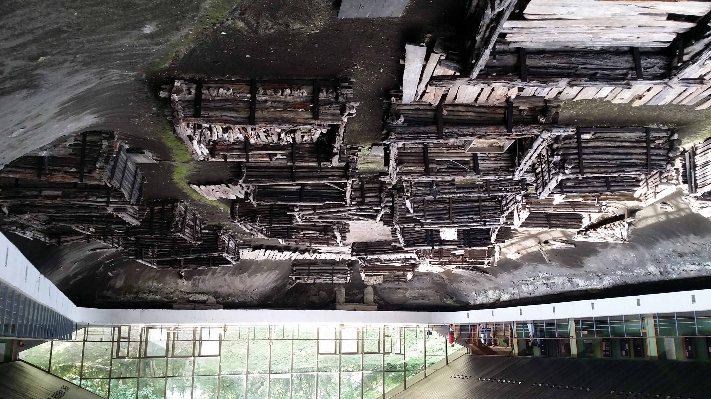
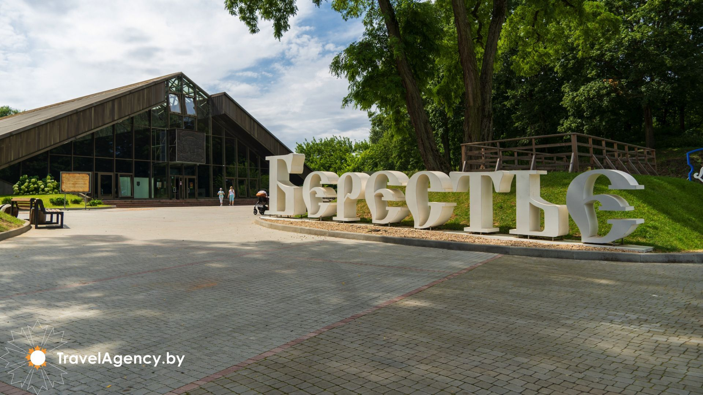

.
Берестие

Берестие - уникальный археологический музей в городе Бресте (Белоруссия),
филиал Брестского областного краеведческого музея. Расположен на мысе,
образуемом рекой Западный Буг и левым рукавом реки Мухавец, на территории
Волынского укрепления Брестской крепости. Музей был открыт 2 марта 1982
года на месте археологических раскопок, проводившихся с 1968 года под
руководством доктора исторических наук П. Ф. Лысенко [1]. В экспозиции и
фондах музея хранится в общей сложности 43 тыс. экспонатов[2]. В основе
музея — вскрытые остатки детинца древнего Бреста, постройки ремесленного
посада XIII века. На территории «Берестья» на глубине 4 м археологами
раскопаны улицы, вымощенные деревом, остатки построек различного
назначения, находящиеся на площади 1118 м². В экспозиции представлено 28
жилых и хозяйственных бревенчатых строений — одноэтажных срубов из брёвен
хвойных деревьев (в том числе два из них сохранились на 12 венцов).
Деревянные постройки и детали мостовых были законсервированы специально
разработанными синтетическими веществами.

Вокруг вскрытого древнего посада размещена экспозиция, посвящённая
жизненному укладу славян, населявших в древности эти места, представлены
археологические находки, сделанные в ходе раскопок: изделия из металлов,
стекла, дерева, глины, кости, ткани, многочисленные украшения, посуда,
детали ткацких станков. Вся экспозиция находится в крытом павильоне
площадью 2400 м² современной архитектуры, выстроенном из бетона, стекла и
алюминия. Ежегодно музей посещают около 60 тыс. человек[4]. Поставить
разработанный ещё в 1974 году павильон из стекла, алюминия и бетона смогли
только после личного вмешательства Председателя Совета Министров СССР А.
Н. Косыгина[6]. На высшем государственном уровне принято решение о
реконструкции музея, которая продлится с 2017 по 2019 год и которая
посвящена 1000-летию Бреста[7]. Реконструкция предусматривает обновление
экспозиции музея, замену крыши, но без установки системы поддержания
надлежащего микроклимата для обеспечения сохранности уникальных экспонатов
из дерева XI-XIII веков. В 2020 коллектив музея удостоен Премии Президента
Республики Беларусь «За духовное Возрождение» за активную деятельность по
сохранению национального культурного достояния и создание обновлённой
экспозиции филиала музея.